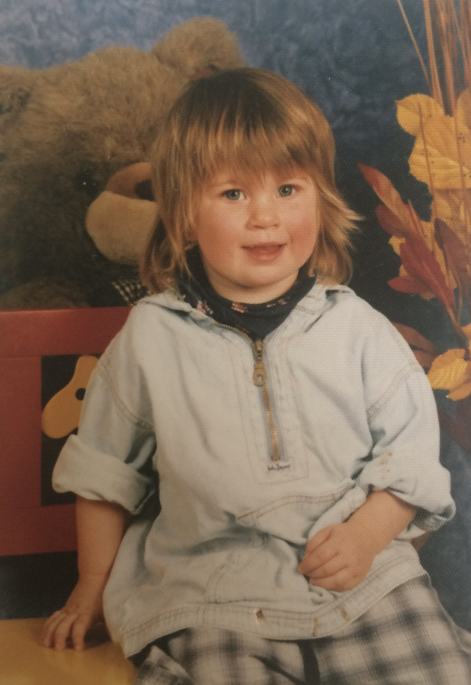
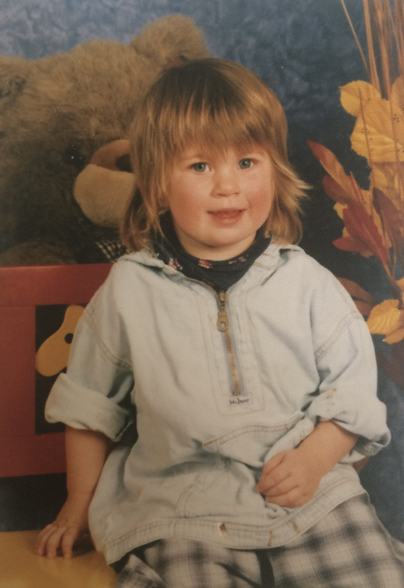

Welcome to the Child Language Lab
At the Child Language Lab, we investigate how children acquire and develop language skills. Our research combines playful exploration with rigorous scientific methods to uncover the fascinating world of child language development.

Did You Know?
Babies are born able to distinguish sounds from all languages, but by around 12 months, they specialize in the sounds of their native language, losing this universal ability.
Our Research
Big Questions
At the Child Language Lab, we investigate fundamental questions about language acquisition and development:
- What role do children play in how languages change over time?
- How does language learning shape the way we think and reason?
Learning to Talk About Possibilities
Your content about modal language acquisition research will go here
Children and Language Change
content about language change research will go here
Want to learn more about our research?
Meet Our Team
Principal Investigator
Dr. Ailís Cournane
Associate Professor, Department of Linguistics, New York University
Dr. Ailís Cournane is an Associate Professor at NYU's Department of Linguistics, specializing in child language development. She earned her PhD in Linguistics from the University of Toronto, and previously worked at the Universität Mannheim (Germany). Her research focuses on how young children learn to linguistically express possibility meanings (e.g., what could or will happen, or what may or must be true) in various languages (so far: English, Bosnian, Dutch, French, German, Mandarin, and Spanish), and how child learning may contribute to how languages change over time. She uses many different methodologies to help us better understand how children acquire languages: game-like behavioral studies, eye-tracking experiments, and corpus-based analyses of recorded natural conversations. Dr. Cournane grew up in Montréal (QC, Canada) and Durham (NH, USA) with Irish parents. She is fluent in English and Canadian French, and speaks some German and Irish (Gaeilge). Her favourite hobby is pottery.
Visit Her WebsiteGraduate Students
 

Jessica Goebel
Graduate Student
Mohit Mukherji
Doctoral Student
Research Assistants
Past Members
Publications
In Preparation & Submitted
- Submitted Phillips, S., & Cournane, A. Bilinguals process incoming words using distributions across both languages. Bilingualism: Language & Cognition.
- Re-submitted Tulling, M. A., Bacon, M., & Cournane, A. The past is "fake": facilitated processing of wishes compared to counterfactual conditionals in 4- and 5-year-olds. Journal of Experimental Child Psychology.
- In preparation Alsop, A. U., & Cournane, A. Experimental evidence for speaker commitment in Japanese disjunction. Journal of Semantics.
- In preparation Tulling, M. A., Arvindam, V. S., & Cournane, A. Maybe now, not later: online processing of possibility and negation in adults and 2-year-olds. Cognition.
- In preparation Cournane, A., Dieuleveut, A., Repetti-Ludlow, C., & Hacquard, V. Possibility language acquisition beyond the epistemic paradigm. Developmental Psychology.
- In preparation Grosu, I., & Cournane, A. Changing the Facts in Child Counterfactual Comprehension. Child Development.
- In preparation Cournane, A., & Tailleur, S. Where do maybes come from? Evidence from English, French and Norwegian. Linguistics Vanguard.
2023
- Cournane, A., & Klævik-Pettersen, E. (2023). The role of the conservative learner in the rise and fall of V2. Journal of Historical Syntax. [click for pdf]
- Cournane, A., Hirzel, M., & Hacquard, V. (2023). Mapping modals to meanings: an elicited production study on 'force' and 'flavor'. Language Acquisition. DOI: 10.1080/10489223.2023.2173074 [click for pdf]
2022
- Tulling, M. A., & Cournane, A. (2022). Wishes before ifs: Mapping "fake" past tense to counterfactuality in wishes and conditionals. Language Development Research, 2(1), 306-355. DOI: 10.34842/2022.0559 [click for pdf]
- van Dooren, A., Dieuleveut, A., Cournane, A., & Hacquard, V. (2022). Figuring out root and epistemic uses for modals: The role of the input. Journal of Semantics. DOI: 10.1093/jos/ffac010 [click for pdf]
- Cournane, A., & Veselinović, D. (2022). If you must, you will: Children overcommit to likelihood inferences from deontic modal use. Glossa, 7(1). DOI: 10.16995/glossa.5802 [click for pdf]
- Dieuleveut, A., van Dooren, A., Cournane, A., & Hacquard, V. (2022). Finding the force: How children discern possibility and necessity modals. Natural Language Semantics. DOI: 10.1007/s11050-022-09196-4 [click for pdf]
2021
- Cournane, A., & Tailleur, S. (2021). La production épistémique chez l'enfant francophone: une étude comparative. Arboressences, 10, 47-72. [click for pdf]
- Cournane, A. (2021). Revisiting the Epistemic Gap: It's not the thought that counts. Language Acquisition, 28(3), 215-240. Awarded journal's «Best Paper by an Untenured Scientist» for 2021 [click for pdf]
2020
- Cournane, A. (2020). Learning Modals: a grammatical perspective. Language & Linguistics Compass, 14(10), 1-22. [click for pdf]
- Cournane, A., & Pérez-Leroux, A. T. (2020). Leaving obligations behind: Epistemic incrementation in preschool English. Language Learning and Development, 16(3), 270-291. Awarded journal's «Peter Jusczyk Best Paper Award» for 2020 [click for pdf]
2019
- Cournane, A. (2019). A developmental view on incrementation in language change. Theoretical Linguistics, 45(3-4), 127-150. [click for pdf]
- Cournane, A. (2019). Grammatical Representations vs. Productive Patterns in Change Theories. Theoretical Linguistics, 45(3-4), 287-297. [click for pdf]
2014
- Cournane, A. (2014). In search of L1 evidence for diachronic reanalysis: mapping modal verbs. Language Acquisition, 21(1), 103-117. Awarded journal's «Best Paper by an Untenured Scientist» for 2014 [click for pdf]
Participate in Our Studies
We're always looking for young participants (ages 0-6) to help us uncover the mysteries of language acquisition. Participation is fun, educational, and contributes to important scientific research!
We conduct studies in various formats:
- In-lab studies
- Off-site studies
- ChildrenHelpingScience/LookIt online studies
- Online studies via Zoom
"Every child's participation helps us better understand language development. Join us in this exciting journey of discovery!" - Lab Team
Educational Resources
Explore our collection of language development videos created by Dr. Cournane for Carousel of Languages. These informative videos offer insights into child language development for both parents and young learners.
Contact Us
Get in touch with the Child Language Lab:
- Email: nyuchildlanguagelab@gmail.com
- Phone: (212) 992-7471
- Address: New York University, Department of Linguistics, 10 Washington Pl., Rm. 303, New York, NY 10003